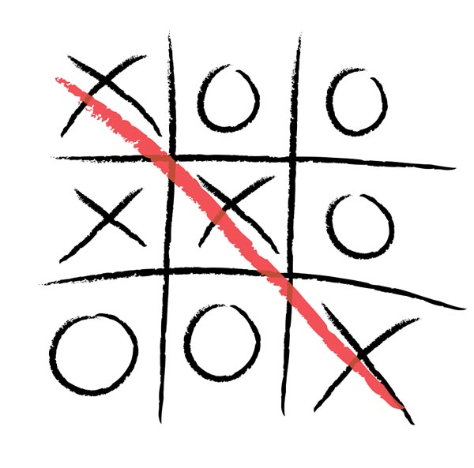

Dans le cadre de ce projet, nous analysons les critiques, les scores utilisateurs et les ventes de 400 jeux vidéos sortis entre 1977 et 2020. Cette analyse vise à apporter de la valeur à notre jeu de données. Elle a été faite sur un Jupyter notebook avec le langage PostgreSQL.

Le projet visait à fournir un POC avec pour objectif:
- L'analyse de l’activité des journalistes du groupe
- L'analyse des ventes de publications
- L'analyse de la fréquentation des sites Web
Ce projet s'adressait à deux classes de décideurs le responsable RH & le responsable Marketing. Ces deux décideurs avaient des besoins différents ayant des profils techniques diamétralement opposés.
Dans ce projet, nous analysons les données sur la dette internationale recueillies par la Banque mondiale afin de répondre à des questions comme:
Quel est le montant total de la dette due par les pays énumérés dans l’ensemble de données ?
À quel pays appartient le montant maximal de la dette et à quoi ressemble ce montant ?
Ce projet consistait au développement de rapports d'activités et de comptes rendus sous Excel apportant aux différents comités de la Banque mondiale des informations pertinentes visant à améliorer leurs décisions d'attributions de budgets.
Ce projet visait à créer & interroger une base de données sous Oracle afin de modéliser la gestion des bagages par une compagnie aérienne.

Ce projet a consisté au développement d'un jeu du Kalaha. Jeu ayant pour but de collecter le maximum de points avant son adversaire.

Ce projet a consisté au développement d'un jeu du Tictactoe. Jeu ayant pour but de placer trois marques horizontale, verticale ou diagonale avant l'adversaire.